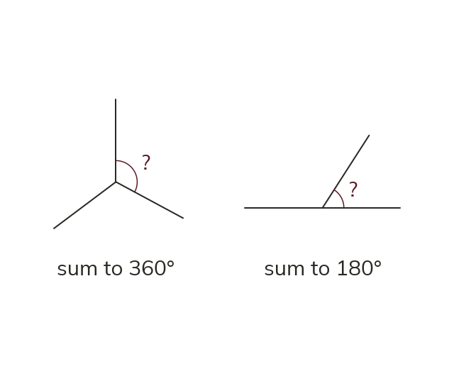

Point and line
Angles around a point sum to 360°. Angles on a straight line sum to 180°. Subtract the known angles from the total to find the missing one.
Angles around a point sum to 360°. Angles on a straight line sum to 180°. Both are angles that fit together to complete a shape - a full turn or a straight line - so subtracting the ones you know from the total gives the missing one.